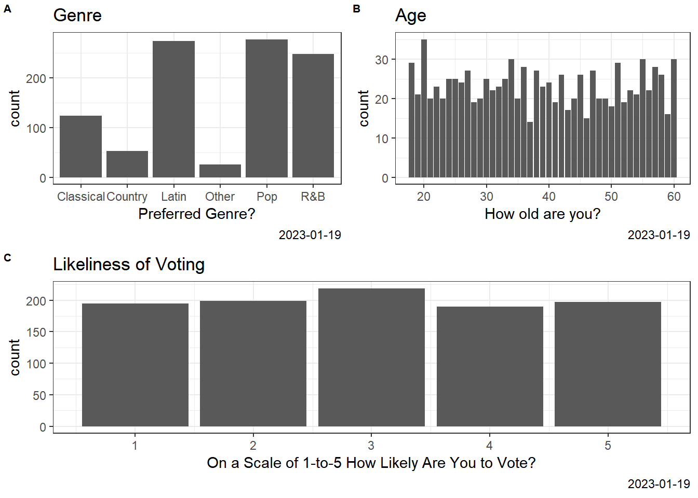

v tibble 3.1.4 v dplyr 1.0.7
v tidyr 1.1.3 v stringr 1.4.0
v readr 1.4.0 v forcats 0.5.1
v purrr 0.3.4
Warning: package 'tibble' was built under R version 4.0.5
Warning: package 'tidyr' was built under R version 4.0.5
Warning: package 'dplyr' was built under R version 4.0.5
Warning: package 'stringr' was built under R version 4.0.5
-- Conflicts ------------------------------------------ tidyverse_conflicts() --
x dplyr::filter() masks stats::filter()
x dplyr::lag() masks stats::lag()
library(viridis)
Warning: package 'viridis' was built under R version 4.0.5
Loading required package: viridisLite
Warning: package 'viridisLite' was built under R version 4.0.5
library(gridExtra)
Warning: package 'gridExtra' was built under R version 4.0.5
Attaching package: 'gridExtra'
The following object is masked from 'package:dplyr':
combine
library(cowplot)
Warning: package 'cowplot' was built under R version 4.0.5
p1<-ggplot(N,aes(x=`Voting`, ))+geom_bar(position='dodge') +scale_colour_brewer(palette ="Set1") +theme_bw() +labs(x ="On a Scale of 1-to-5 How Likely Are You to Vote?",y ="count",title ="Likeliness of Voting",caption =Sys.Date())p1
#2p2<-ggplot(N,aes(x=`Genre`, ))+geom_bar(position='dodge') +scale_colour_brewer(palette ="Set1") +theme_bw() +labs(x ="Preferred Genre?",y ="count",title ="Genre",caption =Sys.Date())p3<-ggplot(N,aes(x=`Age`, ))+geom_bar(position='dodge') +scale_colour_brewer(palette ="Set1") +theme_bw() +labs(x ="How old are you?",y ="count",title ="Age",caption =Sys.Date())ggdraw() +draw_plot(p2, x =0, y = .5, width = .5, height = .5) +draw_plot(p3, x = .5, y = .5, width = .5, height = .5) +draw_plot(p1, x =0, y =0, width =1, height =0.5) +draw_plot_label(label =c("A", "B", "C"), size =8,x =c(0, 0.5, 0), y =c(1, 1, 0.5))

Graph A
In terms of music genre, Latin and Pop music are the most preferred, followed closely by R & B, and Classical, while Country and Other genres have low preferences.
Graph B
The age distribution indicates that most individuals are 55 years old, followed closely by individuals aged 31 years, 28 years, and 22 years respectively. The fewest individuals are aged 58 years, 26 years, and 24 years respectively. While other age groups are fairly distributed
Graph C
On a scale of 1 to 5 where 1 indicates a strong disagreement to voting and 5 indicates a strong preference for voting, most respondents indicate their preference of being undecided to being not likely to vote, while those that indicate stronger preferences towards voting are fewer within the distribution.
Comparing graph C and Likeliness of voting
Graph c and likeliness of voting are showing the same information but graph C uses shorter bars and the second graph uses longer bars. The graph that uses longer bars helps viewers to grasp the information more easily. Also, it shows the count more precisely and the difference between scales in more detail.
Graph #1
### Data Visualization### Hackathon (assignment 4)### Dohyo Jeong### Sept/27/2022# Table 1N <-read.csv("samplingExample.csv", header =TRUE)colnames(N)<-c("Name", "Music Taste", "Likeliness of Voting")library(ggplot2)ggplot(N,aes(x=`Likeliness of Voting`,fill=`Music Taste`))+geom_bar(position='dodge') +scale_colour_brewer(palette ="Set1") +theme_bw() +labs(x ="On a Scale of 1-to-5 How Likely Are You to Vote?",y ="count",title ="Likeliness of Voting",caption =Sys.Date())
Graph 1.
People with music taste B are likely to vote more than people with music taste A, C.
Also, people with music taste B are more favorable to voting, and people with music taste A mostly voted for 1 and 2. Music taste C has no significant difference between the scales of likeliness of voting.
Graph #2
### Data Visualization### Hackathon (assignment 4)### Dohyo Jeong### Sept/27/2022# Table 2library(dplyr)library(ggplot2)library(tidyverse)library(viridis)library(gridExtra)library(cowplot)property_df <-read.csv("as4_data.csv", header =TRUE)colnames(property_df)<-c("nation", "year", "property","corruption", "Developed", "Country","corruption_lev")property_df <-na.omit(property_df)p1 <- property_df %>%filter(year ==2009) %>%ggplot(aes(y = property, x = corruption , colour = Country)) +geom_point(alpha =0.3) +theme_bw() +geom_smooth(method ="lm", se =FALSE) +scale_colour_brewer(palette ="Set1") +labs(x ="Political Corruption",y ="Property Right",title ="Relationship between Property Right and Corruption",subtitle ="2009",caption =Sys.Date()) +theme(legend.position ="right",axis.title =element_text(size =6),title =element_text(size =8),legend.text =element_text(size =6))####p2 <-ggplot(property_df, aes(x = property_df$property))+geom_density(aes(group = Country, fill = Country), alpha =0.6) +theme_bw() +scale_fill_viridis(discrete =TRUE) +scale_color_viridis(discrete =TRUE) +labs(x ="Property Right",y ="Density",title ="Property Right Distribution by Country") +theme(axis.title =element_text(size =6),title =element_text(size =8),legend.text =element_text(size =6))####pr_df <- property_df %>%mutate(pro_lev =ifelse(property_df$property >=70, 'high',ifelse(property_df$property >=30, 'middle','low')))p3 <- pr_df %>%filter(year ==2009) %>%ggplot(aes(x = pro_lev, fill = Country))+geom_bar(position='identity') +scale_colour_brewer(palette ="Set1") +theme_bw() +labs(x ="Property Right",y ="count",title ="Property Right by country") +coord_flip() +theme(axis.title =element_text(size =6),title =element_text(size =8),legend.text =element_text(size =6))####ggdraw() +draw_plot(p2, x =0, y = .5, width = .5, height = .5) +draw_plot(p3, x = .5, y = .5, width = .5, height = .5) +draw_plot(p1, x =0, y =0, width =1, height =0.5) +draw_plot_label(label =c("A", "B", "C"), size =8,x =c(0, 0.5, 0), y =c(1, 1, 0.5))
`geom_smooth()` using formula 'y ~ x'
Graph 2 (a)
Based on the distribution of property rights, there is a significant mean difference between developed and developing countries. This implies that developed countries have more strict policies toward property rights and as countries become more developed there are higher chances that the country will protect their property rights.
Comparing graph 2(a) and 2(b)
Regarding property rights by country, we see that a majority of developing nations have ‘middle’ level property rights; whereas, all developed nations have “high” level property rights. Additionally, developing states have varying degrees of property rights, with ‘high’ level rights being the lowest amount possessed, and ‘middle’ rights being the highest amount possessed. This graph supports the literature; where, developing nations lack the institutional structure to possess high-level property rights for its citizenry while developed nations hold the contrary to be true.
Also, it is more convenient to see the count between developed and developing countries via graph 2(B) but (A) shows more information such as the mean, variance, skewness, etc. This allows us to understand the property rights of developed and developing countries in more depth.
Graph 2 (c).
This scatter plot with two lines shows the negative correlation between property rights and political corruption for both developed and developing countries. Based on the slope of the developed countries, it is shown that the correlation between property right and corruption is less sensitive, whereas the correlation between property right and corruption in developing countries have a stronger relationship. Moreover, blue dots are gathered around a higher political corruption rate, implying that developing countries tend to have higher political corruption than developed countries.